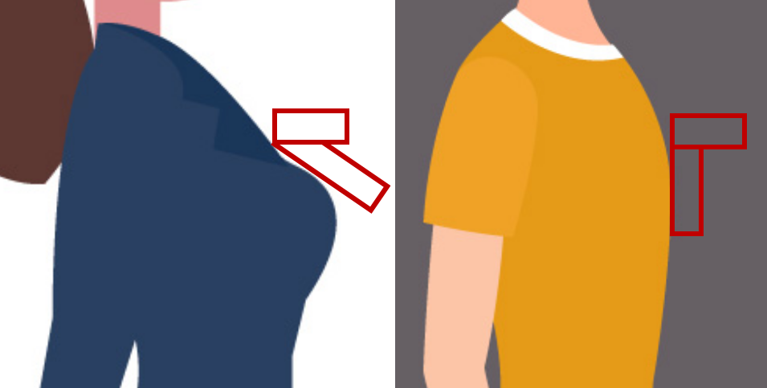
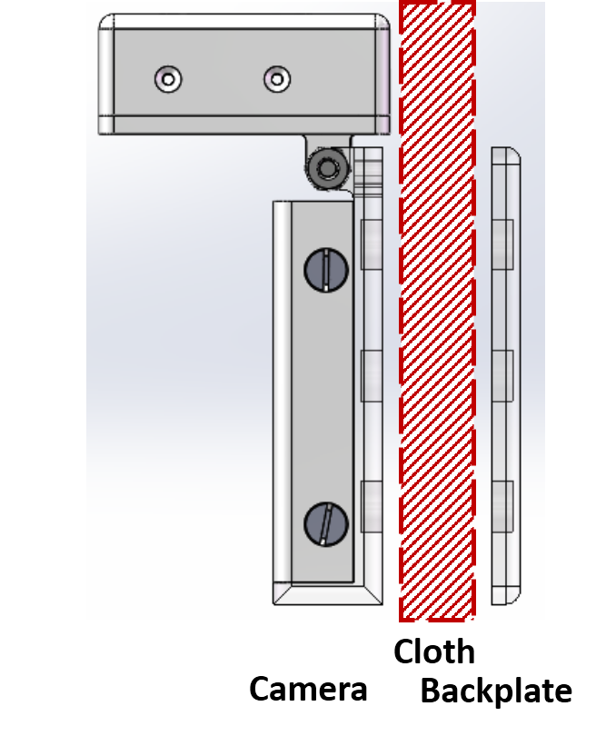

Wearable Camera
Case Design
About the Project
Wearable devices are become more and more popular, and one class of them are designed specifically for health monitoring.
The present camera focuses on automatic eating detection. As overeating is the primary cause of obesity, it will be helpful for developing behavioral interventions for obesity treatment.
I derived 3 different types of cases for different application scenarios, among which 2 are indivdual, fully-functional cases: necklace and brooch style, and 1 is accessorial gripper and works together with other components.
Skills Involved
- Solidworks
- Human-centered Design (Ergonomics)
- Prototyping
- 3D Printing (PLA, Resin)
- Hand Drilling
Necklace
Overview of Necklace
Similar to a real necklace, this wearable sensor consists of a "pendant" to hold all the electronic components, and a "band" wrapping around the neck to fix the sensor.
Wearing around the neck, it can detect the chewing motion of the chin, and predict the motion pattern (eating/non-eating) and what type of food the user eats.
Pendant
The pendant is 3D printed case with sensory components as well as battery inside.
There is a window on top for the proximity sensor and auxiliary light. There are openings on the bottom for the USB port, the switch and the indicator light. There are ears at both sides with slot so that a spring bar can be inserted and connect to the band.
The symbol of the product is printed on the front of the case. The curvature at the back of the case is designed based on human body data.
Case Intro
Band
| Case | Band | Button (color) | |
|---|---|---|---|
| Black | Silicone | Black | Gold |
| Aqua Blue | Red | Silver | |
| Clear | Leather | Black | Bronze |
| Mint Green | Brown | Gunmetal | |
Color Options for the Necklace
The band currently used is silicone, which is flexible and stretchable, so that the sensor can be fixed relatively stable without stifling the user. The skin-friendly surface makes it optimal for day-long wearing. We also punch holes on the band. The porous structure makes it easy to perspire, so that it can still be comfy during and after exercise.
Two sides of the band are attached with rivet buttons. Rivet buttons are easy to attach and detach. Even an overweight user can operate them at the back of the neck. The colored metal buttons look nice and serve as decoration to some extent.
The band can also be customized with different materials and colors. We have black and red silicone bands, black and brown leather bands, 4 colors rivet buttons at hand to fit different perference.
The length of the band is designed based on the user data collected and specifically for overweight people, whose neck circumference is longer than other people.
A pilot survey has been done to understand users' preference before we finalize the primary color scheme and material.
Brooch
Overview of Brooch (main case)
Fit for different people
It is a brooch-like camera wearing around the chest to capture videos about people's eating motion and food intake. It consists of main case storing electronic components, backplate for fixing the camera, and a lanyard.
Main Case
The main case consists of the battery box at the bottom and sensor holder on the top. For the sensor holder, there is a window on top for the camera and the sensor, and a window at the back for the USB port. For the battery box, two parts are combined with screws firmly and easy to detach as well.
The two sections are connected with a hinge, which serves as rotation axis. As the back of the battery box is always aligned with the human chest, by adapting the angle between two sections, the orientation of the sensory components can be adjusted according to boday shape, thus they can always face vertically towards users' chin, to record the food intake.
Backplate
How to wear the camera
The backplate is to attach the main case to the clothes and fix it at certain position. It's placed inside the clothes, the main case is placed outside, and they are combined under the magnetic force, and fixed by the friction. Printed with flexible material, it's comfy to wear and can be adapted to different body shapes.
Lanyard
Using magnets as fixture, the camera is easy to wear and detach, but it may slip off during intense exercise.
To enhance stability and safety, there are multiple mounting holes at the back of the main case for different types of lanyards. By controlling the length of the lanyard, we can also indicate the user where is the proper position to fix the camera (around the chest, not too high or too low).
Brooch Intro
Details
Necklace
BOM
| Category | Part # | Part Name | Vendor | Unit Qty |
|---|---|---|---|---|
| Materials | 1 | Silicone Band | B00V95ZUSW, Amazon | ~50cm, 2 bands can make ~3 necklaces |
| Materials | 2 | Rivet Button | B07BK2PVN1, Amazon | 5 pairs of buttons |
| Materials | 3 | Spring Bar | B01C27A45O, Amazon | 2 bars |
| Materials | 4 | M1.2x4 Flat Head Screw | 91430A154, McMaster | 2 screws |
| Materials | 5 | 3D Printed Case | / | 1 Set |
| Tools | 6 | Leather Puncher | B06XRDBGY6, Amazon | Optional |
| Tools | 7 | Mini Screw Driver | B074N4YH8Q, Amazon | Optional |
* Unit Qty means the quantity required for making one necklace.
Brooch
BOM
| Category | Part # | Part Name | Vendor | Unit Qty |
|---|---|---|---|---|
| Materials | 1 | M1.6x6 Flat Head Screw | 91430A159, McMaster | 2 |
| Materials | 2 | M3x8 Hex Screw | 93070a064, McMaster | 2 |
| Materials | 3 | M3x6 Flat Head Screw | 91430A116, McMaster | 4 |
| Materials | 4 | M3 Nut | 90591A250, McMaster | 2 |
| Materials | 5 | M3 Nut | 90591A250, McMaster | 2 |
| Materials | 6 | 3D Printed Case | / | 1 Set |
| Materials | 7 | Lanyard | B01F86XBP6, Amazon | 1 |
| Tools | 8 | Flat Screw Driver Set | B074N4YH8Q, Amazon | Optional |
| Tools | 9 | Hex Key Set | B07DQN87J2, Amazon | Optional |
Learn More
Visit the Github repository to get more detailed documentations (Installation specifications, BOM in xls, etc).
This work was completed in collaboration with HABits Lab, whose research focuses on mobile health systems and behavior analysis, and Ka Moamoa Lab, whose research focuses on energy harvesting systems. Visit their homepages for more information.